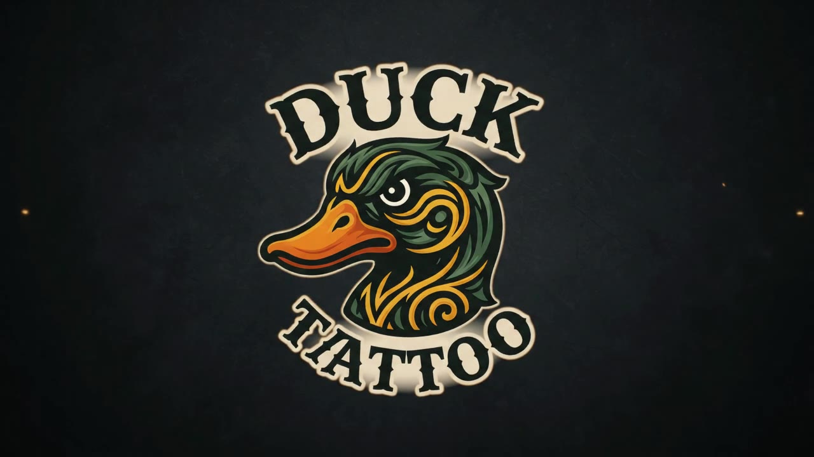
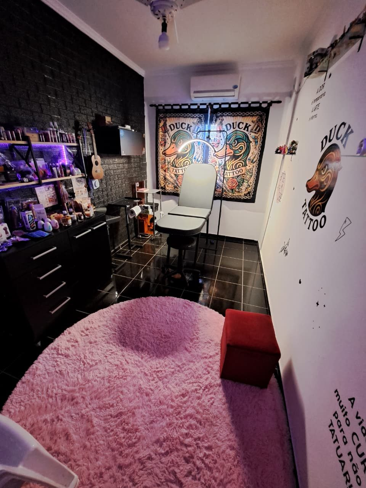
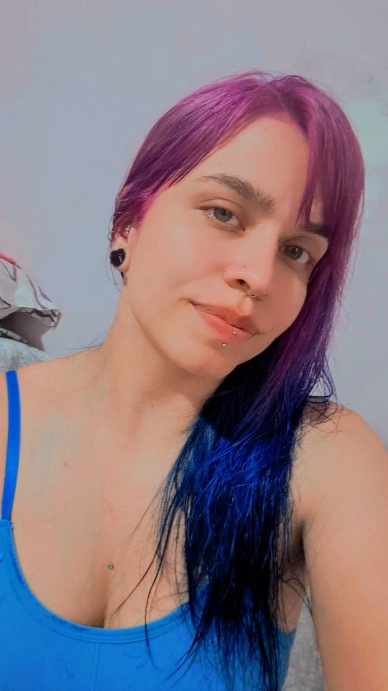
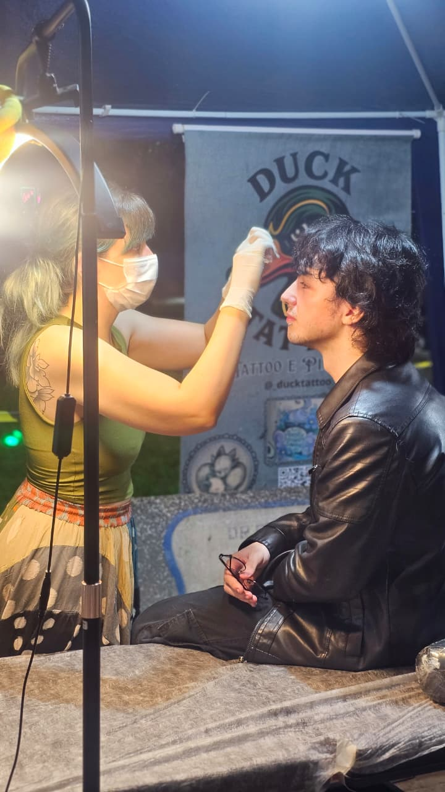
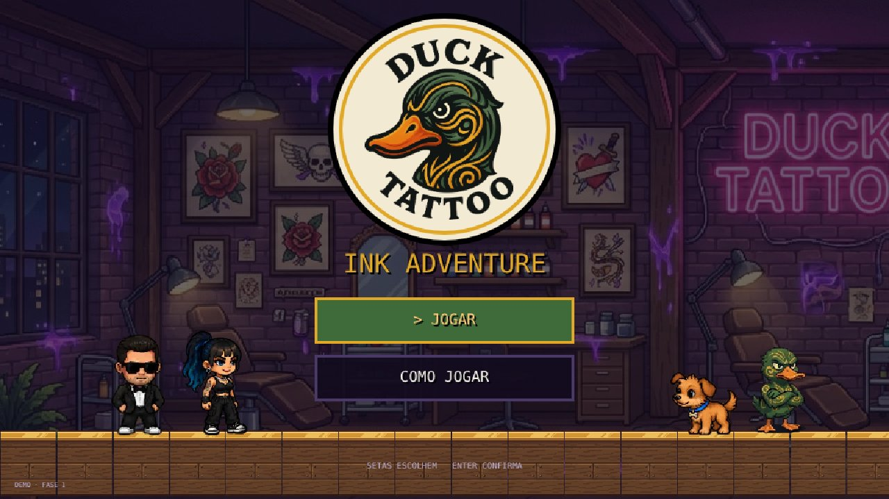

Tatuagem e body piercing · Lins/SP
Arte na pele, com a cara do Duck.

01 · Quem somos
Tatuagem é arte.
Mas principalmente autenticidade.
O Duck Tattoo é um estúdio de tatuagem e body piercing em Lins/SP, criado para transformar cada trabalho em uma experiência exclusiva e personalizada. Do primeiro contato ao resultado final na pele, você encontra um ambiente seguro e inspirador, com orientação e acompanhamento em todas as etapas do seu projeto.
Nossa missão vai além de entregar tatuagens e perfurações tecnicamente impecáveis. À frente do estúdio está a Yasmin Nunes, artista que estuda, aperfeiçoa suas técnicas e vive a arte todos os dias, com cursos em biossegurança e atualização constante.
Aqui, cada projeto é único.
Assim como você.

02 · A artista
10 anos.
Uma vida dedicada
à tatuagem.
Sou a Yasmin, tatuadora e body piercer em Lins/SP e criadora do Duck Tattoo. Do floral delicado ao personagem favorito do seu game ou anime, cada trabalho é desenhado pensando em quem vai carregá-lo.
Tatuo há cerca de 10 anos e sigo sempre aprimorando minhas técnicas para entregar o melhor resultado para cada cliente. Tenho vários cursos em biossegurança e estou sempre me atualizando sobre novas técnicas de perfuração, porque segurança e cuidado vêm em primeiro lugar.
03 · Portfólio
O trabalho.
Floral · Fineline · Blackwork · Anime · Geek · Lettering
04 · Body piercing
Joias que
brilham.
Perfurações feitas com biossegurança e joias escolhidas para cada região. Monte sua orelha do seu jeito ou escolha um piercing novo para o rosto.
- Orelha
- Hélix
- Tragus
- Daith
- Nostril
- Bridge
- Sobrancelha
- Umbigo
- Troca de joias

05 · Eventos
O Duck também
vai até você.
Além do estúdio, o Duck Tattoo participa de feiras e eventos da região, com tatuagens e perfurações feitas na hora. Acompanhe a agenda pelo Instagram.
Ver agenda06 · Como funciona
Da ideia
à pele.
Um processo simples, com atendimento próximo do começo ao fim.
- 01
Chame no WhatsApp
Envie sua ideia, referências, tamanho aproximado e o local do corpo.
- 02
Receba o orçamento
Conversamos sobre o desenho e você recebe o valor.
- 03
Agende a sessão
Escolha um dia dentro dos horários de atendimento.
- 04
Cuide bem
Você sai com as orientações de pós-cuidado para uma boa cicatrização.

07 · Bônus
Ink
Adventure.
O jogo oficial do Duck Tattoo, em pixel art e com trilha sonora. Jogue no computador ou no celular deitado.
Jogar agora08 · Atendimento
Horários.
Atendimento com hora marcada. Chame no WhatsApp para agendar.
Onde estamos
Lins/SP.
Duck TattooR. Dr. Agnaldo de Lins Viote Júnior, 131Morumbi – Lins/SP
CEP 16400-639 Abrir no Google Maps
01Posso levar uma referência para minha tatuagem?
Pode e deve! Mande fotos de referência, o tamanho aproximado e o local do corpo. A partir delas, a Yasmin cria um desenho pensado para você.
02Posso fazer uma tatuagem igual à da referência?
A referência serve de inspiração. O desenho é adaptado ao seu corpo e ao seu estilo, para que a tatuagem seja só sua.
03Vocês fazem tatuagens pequenas e minimalistas?
Sim! Do coração minimalista ao fineline delicado, tatuagens pequenas também fazem parte do portfólio.
04Como funciona o orçamento?
Chame no WhatsApp com sua ideia, referências, tamanho e local do corpo. Você recebe o valor depois de conversarmos sobre o desenho.
05Quanto tempo dura uma sessão?
Depende do tamanho e do estilo. Peças pequenas costumam levar menos de uma hora; peças grandes podem precisar de mais de uma sessão.
06Quais são os cuidados antes da tatuagem?
Venha descansado, alimentado e hidratado. Evite consumir álcool e drogas desde o dia anterior à sessão. Também é importante evitar passar produtos ou cremes que não tenham sido orientados pelo profissional na região que será tatuada.
07Posso tatuar depois de tomar sol?
Não! A pele bronzeada, queimada ou sensibilizada pelo sol não está em boas condições para receber uma tatuagem. Se a região estiver vermelha, descascando ou sensível, é necessário esperar a pele se recuperar completamente antes da sessão.
08Quais são os cuidados depois da tatuagem?
A artista orienta os cuidados de acordo com a técnica e o projeto. De forma geral, é importante manter a região limpa, seguir corretamente as orientações de hidratação, não arrancar as casquinhas e evitar sol, piscina, mar e atrito excessivo durante a cicatrização.
09Quanto tempo leva para um piercing cicatrizar?
Varia por região: o lóbulo cicatriza mais rápido, e cartilagens como hélix e daith levam alguns meses. Você recebe as orientações na hora.
10Que tipo de joia vocês usam?
Usamos joias de aço ou titânio, à escolha do cliente. Todas são devidamente esterilizadas.
11Menor de idade pode tatuar ou furar?
Apenas perfuração! Com acompanhamento de um responsável e assinatura de autorização.
12Posso trocar a joia do meu piercing?
Sim! A troca de joias é feita no estúdio, com segurança e higiene.
10 · Tattoo
Sua história pode
ser a próxima.
Mande sua referência, o tamanho aproximado e o local do corpo. O orçamento é pelo WhatsApp ou pelo Direct.